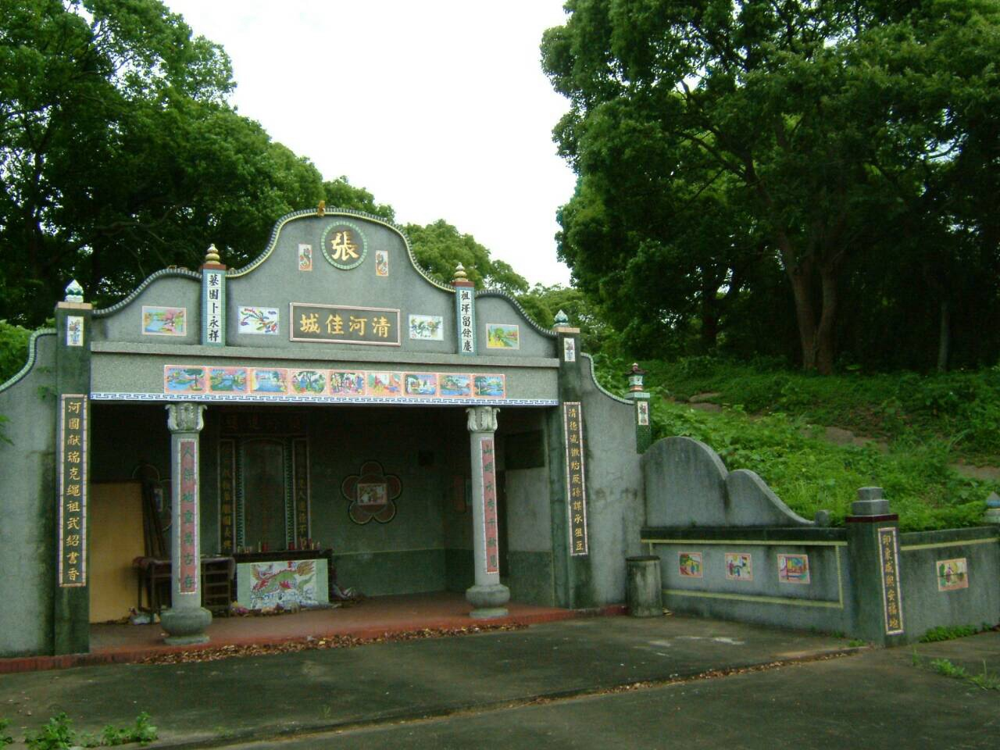
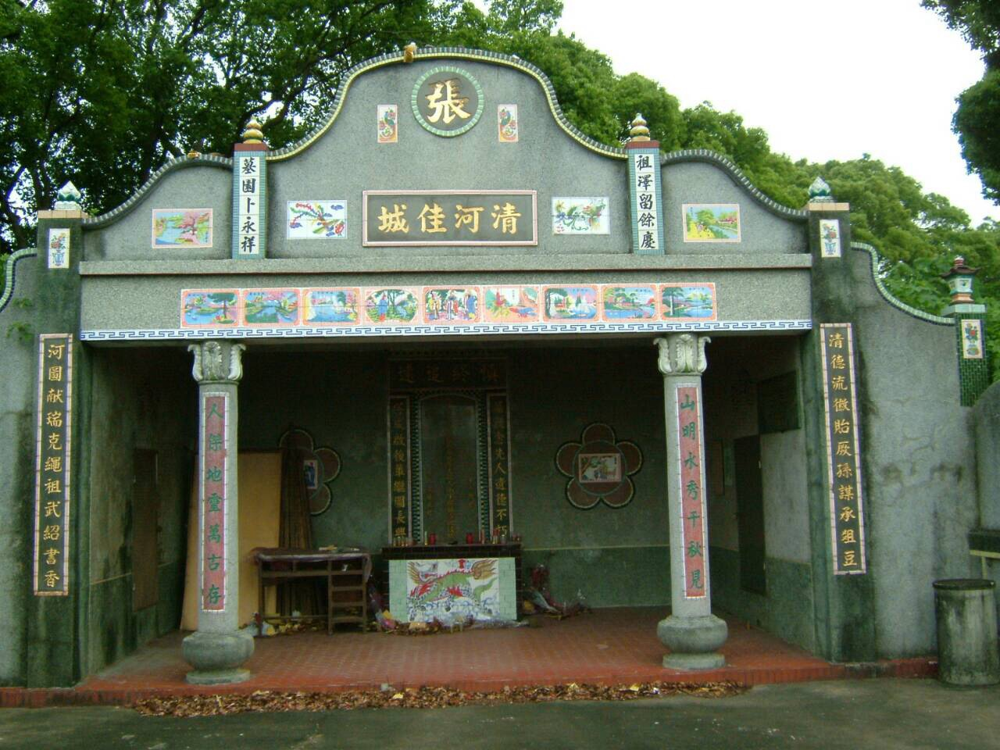
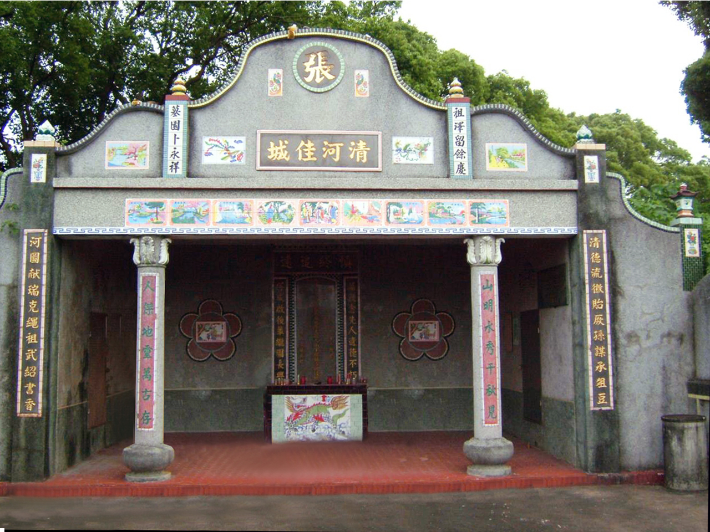
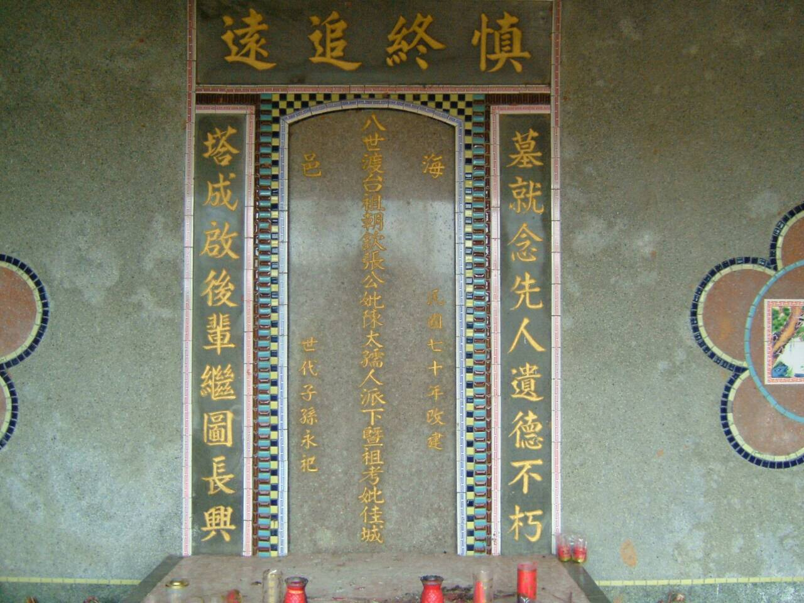
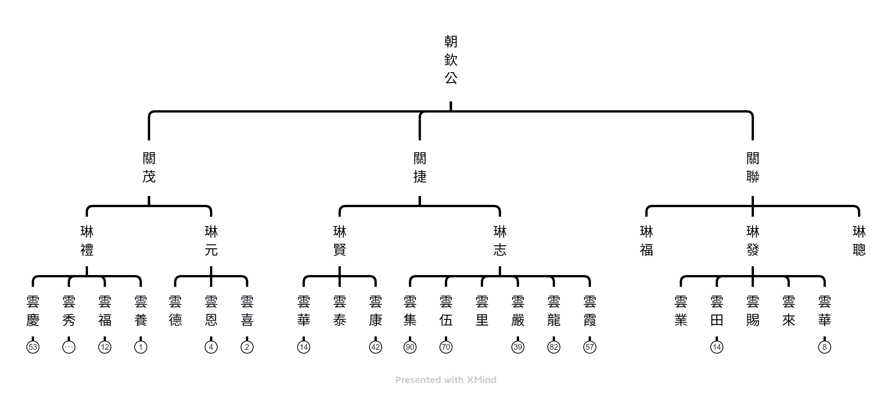

朝欽公派下遷徙史略
朝欽公於乾隆八年(1743)來台登陸於淡水，其時尚無立錐之地，後偕二位幼弟南下到新埔地區於現今旱坑里下樟樹林一帶（當時稱為虎尾寮之無主土地）暫居。初起生活異常清苦，傳說無錢買鍋造飯，撿拾路邊破瓦缸之碎片燒飯度日，慘澹營生。稍後朝欽公生子關捷公，關捷公娶邱氏為妻，並取得鄰近大凍山周圍百餘公頃土地，緩步建基立業，關捷公後生子琳志公，娶閩南人為妻，並承朝廷恩賜官拜仕郎，家業日漸殷實，據傳琳志公聘請唐山地理師（外號鴉片王）卜吉地與監造，歷時三年興建張家大厝數幢，其中，琳志公長子雲霞公之大厝設為張家公廳迄今。此後張家族裔漸繁，名望日顯，迄雲龍公更因｢一副豬肝賺身家｣之足智多謀發跡，再經多年巧妙經營累積，終成新埔三大富戶之一（張家、潘家、蔡家）。
（以上依張紹清耳聞口述記錄）
有關｢一副豬肝賺身家｣之軼事代代相傳，已成張家長輩口中之美談。
依傳說，雲龍公本以販肉營生，某日打烊返家後，有一外地人士路過家門，因天黑路暗四處荒涼無以進退，遂叩門欲借住一宿，雲龍公慷慨熱情款待此一遠客，並將販售所僅餘之豬肝一副下鍋奉客，相談間該遠客感於雲龍公之熱忱無私盛情款待，乃據實告其來歷，該人係大陸來台之公差官人，因大陸遇飢荒特來台灣緊急蒐購穀糧，雲龍公靈機一動允諾協助其收購稻穀。隨即，雲龍公便手持竹筒火把往鄰近家戶一一探詢，四處以優勢價格收購稻穀，再以高價轉售予該官差，獲取大利，類此技巧營謀，遂使雲龍公財富積累日豐，成富戶。
其後，尚有雲龍公熱心公益，造福鄉里，創始興建張家祠為張家族裔耳熟能詳之典故。再後，至張蘭室為張家家道鼎盛之世，當時新埔公眾均尊其為阿室舍（日據時代為地方士紳之意），為新埔地方公眾事務亦不遺餘力，新埔著名之廣和宮興建時，蘭室公即曾出資三分之二以上。
（以上依張書昭口述記錄）
朝欽公派下祖塔照片
   
朝欽公派下主系統表
